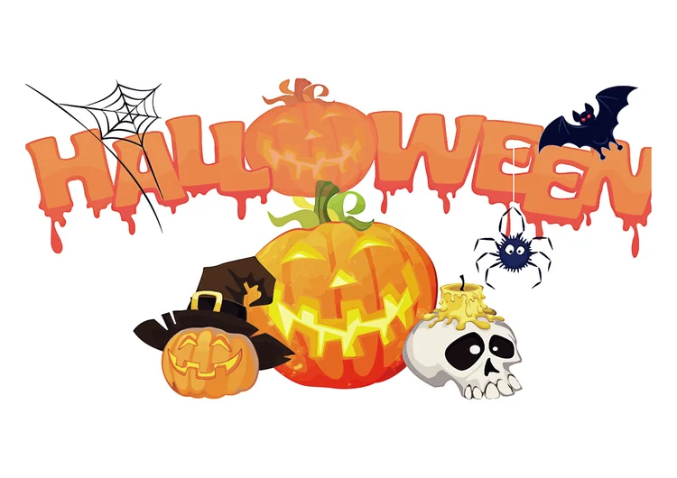

In Amerika wordt Halloween elk jaar bijzonder uitgebreid gevierd
.De huizen worden omgetoverd tot griezelige spookhuizen.
De engste kostuums worden uit de kast getrokken en er vinden talloze Halloween feesten plaats.
Als het donker wordt gaan de kinderen de straten op en langs de huizen om zoveel mogelijk snoep te bemachtigen.
Hierbij roepen zij "trick or treat", ofwel "snoep of je leven"...
In de Amerikaanse stad Salem is Halloween al helemaal een groots spektakel.
Deze stad wordt vanwege zijn heksenverleden ook wel de heksenstad genoemd.
Gedurende de maand oktober draait deze hele stad om het griezelige feest: Happy Halloween!
